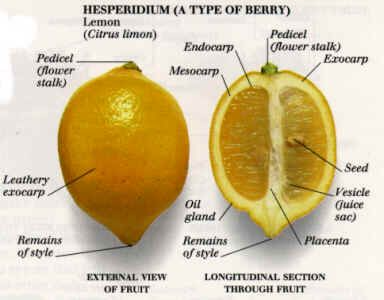

Preserved Lemons
This one, is an absolute gem to have in your fridge. Grab as many lemons as you can, washed, with a sterilised preservation jug and its lid.
Preparation
- Cut the lemon from the end with the remains of style, towards the pedicel, about 3/4 of the way, dividing the lemon into quarters. Image above, to help you navigate the complicated anatomy of a lemon.
- Shove salt generously between these lemon petals, making sure you get over teaspoons worth of salt wedged into each lemon.
- Stuff each lemon as you repeat this process, into the preservation jug with layers of salt. Press down vigorouly as you go.
- Good job. Once you wedged these lemons in nice and tight, we want this lemon orgy to be submerged within its own juices. Press!
- Lid this jug (you may require a beaded weight in a glass cup or miniature jar to keep the lemons submerged and lid on).
- Wait for a month, or until the skin is easily tearable and edible, with a deep citrus flavour and the saltiness of the sea.
Recommended Usage
Some of my favourite ways to use preserved lemon is by... * adding it to a heavy pasta, example: smoked salmon and spinach cream pasta, to add a tangy shot of freshness that cuts through the cream
- similarly, adding it to sweet vegetable dishes. My absolute favourite was when my dear friend Felix made this excellent side dish with steamed golden beetroot, topped with greek yoghurt, dill, and chopped preserved lemon. I have recreated this dish numerous times and found that creating an aleppo chilli sauce by Ottolenghi works quite well with this dish.
- alternatively, asian noodles with clear broth! and many more.
Earl Grey Chiffon Cake
Drier than pound cake and less sweet than sponge cake, its flavours are subtle and not at all overpowering. It invites you to add a dollop of freshly whipped cream (dairy or oat), and listen to flavours other than sweetness that seems to speak quite loudly despite its porous, light texture. The earl grey flavour is perfect for this, with its bergamot oil notes accompanying the deeper flavours of the tanned skin of the cake. Similarly, I would recommend having earl grey flavours in biscuits, with lemon zest icing (I know, I have been quite obsessed with lemon recently).